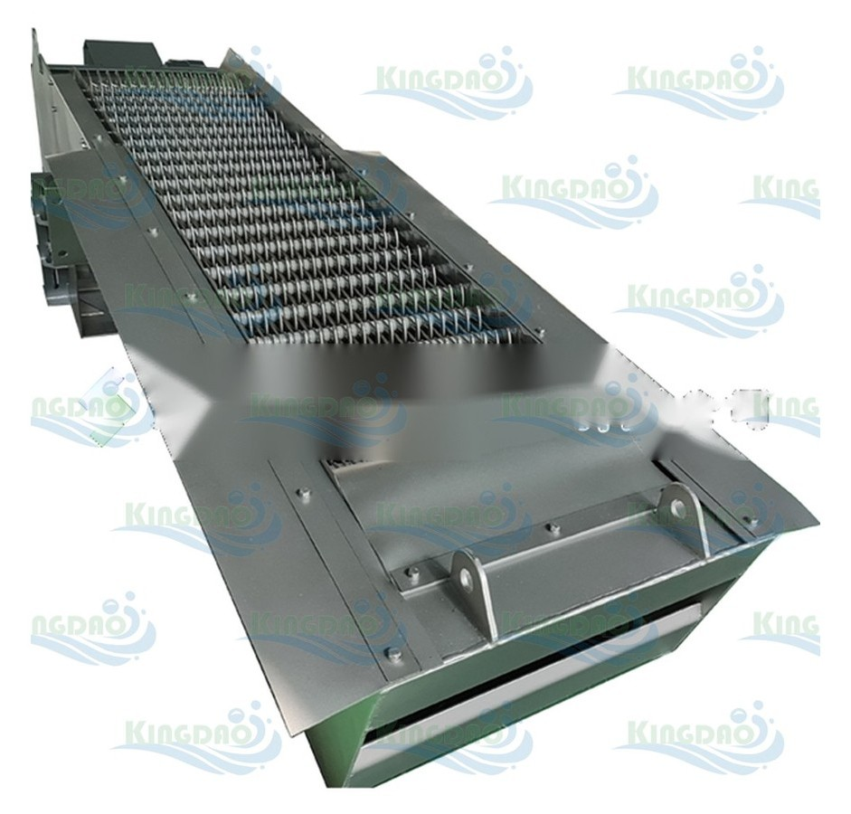

In short: Continuous fine screening with a rotating drum and internal spray cleaning. Head loss stays steady because there is no rake stroke to time, apertures are perforated plate or wedge wire selected against the downstream duty, and the drum configuration fits where a long inclined screen would not.
A rotary drum screen filters the flow through a perforated or wedge-wire drum that turns slowly, with the retained solids carried up and off by the rotation, and the screen surface cleaned by internal spray water. There is no raking cycle, so the head loss stays steady instead of pulsing.
It suits flows where a bar screen cannot achieve the required screening size — fine screening ahead of filtration, membrane protection, or industrial flows carrying fibrous material.

Size selection follows the channel width first, then the bar spacing that satisfies the downstream requirement.
| Model | Drum dia. mm | Drum length mm | Outlet d mm | Channel B mm | Max water level Hs mm | Flow @6 mm | Flow @8 mm | Flow @10 mm | Flow @12 mm |
|---|---|---|---|---|---|---|---|---|---|
| 600 | 600 | 500 | 219 | 650 | 350 | 314 | 357 | 385 | 406 |
| 800 | 800 | 620 | 273 | 850 | 450 | 590 | 676 | 731 | 769 |
| 1000 | 1000 | 700 | 273 | 1050 | 540 | 962 | 1080 | 1172 | 1238 |
| 1200 | 1200 | 800 | 300 | 1250 | 620 | 1263 | 1414 | 1534 | 1625 |
| 1400 | 1400 | 1000 | 300 | 1450 | 750 | 1892 | 2145 | 2325 | 2487 |
| 1600 | 1600 | 1150 | 360 | 1650 | 860 | 2475 | 2778 | 3021 | 3183 |
| 1800 | 1800 | 1250 | 360 | 1850 | 960 | 3105 | 3505 | 3787 | 4000 |
| 2000 | 2000 | 1350 | 500 | 2070 | 1050 | 3775 | 4250 | 4594 | 4857 |
| 2200 | 2200 | 1450 | 500 | 2270 | 1150 | 4568 | 5130 | 5546 | 5900 |
| 2400 | 2400 | 1650 | 500 | 2470 | 1280 | 5757 | 6477 | 7000 | 7425 |
| 2600 | 2600 | 1950 | 500 | 2670 | 1490 | 7765 | 8773 | 9482 | 10042 |
| 2800 | 2800 | 2150 | 700 | 2870 | 1630 | 9372 | 10554 | 11439 | 12090 |
| 3000 | 3000 | 2400 | 700 | 3070 | 1800 | 11290 | 12740 | 13795 | 14586 |
Flow in m³/h at 1.0 m/s through the screen; installation angle 35°. Channel depth H1 600–3000 mm, discharge height built to your requirement.
Municipal fine screening · MBR protection · textile and paper flows
Flow, the medium, the installation and the discharge requirement — that is enough to select and quote.
There is no rake stroke. Flow passes through a continuously rotating drum, so head loss stays steady instead of rising between cleaning cycles, and nothing has to be timed against the flow.
Perforated plate or wedge wire, selected against whatever sits downstream - the downstream equipment sets the aperture, not the screen.
Internal spray cleaning keeps the drum surface clear without manual intervention, so the unit does not blind over during a shift.
The drum configuration is compact - it fits where a long inclined screen would not, which is why it is common on packaged and retrofit plants.
From the model table: drum diameter and length against flow, with the channel width B and maximum water level Hs fixed by the civil opening you have.